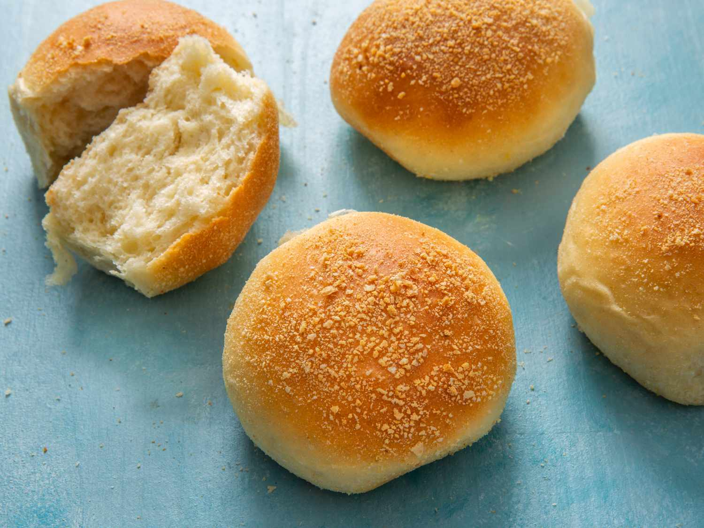
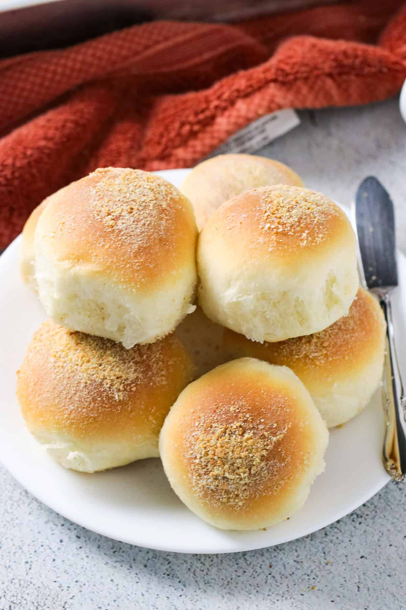
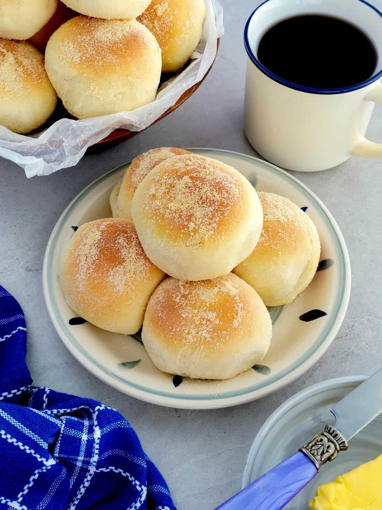

Pan de Sal





History
Ang Pan de Sal ay isa sa pinaka-iconic na Filipino breads at naging staple sa bawat umaga. Dinala ito ng mga Kastila noong panahon ng Spanish colonization of the Philippines, at kalaunan ay inangkop sa lokal na panlasa—mas soft at slightly sweet kumpara sa European original. Ginagamit ito bilang breakfast bread o pang-merienda, at kadalasang isinasawsaw sa kape o nilalagyan ng palaman. Sa paglipas ng panahon, ang Pan de Sal ay naging simbolo ng Filipino daily life at comfort food.
Ingredients & Notes
All-purpose flour
Yeast
Sugar
Salt
Milk
Butter
Eggs
Price
₱5